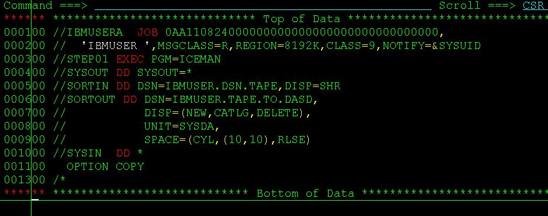

mainframe访问磁带(Tape)
2011-08-27
大机上磁带(tape)一般用来存储大容量的数据的，可以降低成本。我们要访问tape中的数据的时候，一般的做法是用JCL将tape中的记录转存到直接存储访问设备(DASD)中再查看。 下图中，我们通过utility ICEMAN将IBMUSER.DNS.TAPE这个tape中的所有记录都转存到IBMUSER.TAPE.TO.DASD中，这样就能查看了。

不过，需要注意的是，tape里面的数据量一般都很大，所以更多时候我们再用的时候会指定读取的record的数目，比如这里我们指定读取100条：

甚至，你还可以用SORT中的语法筛选出你想要的条件。比如(1，4，EQ,'AAAA')这样子。
Category: articles Tagged: z/OS